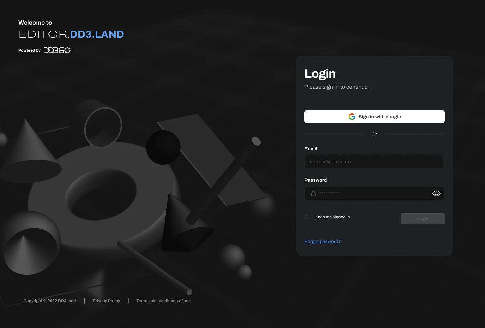
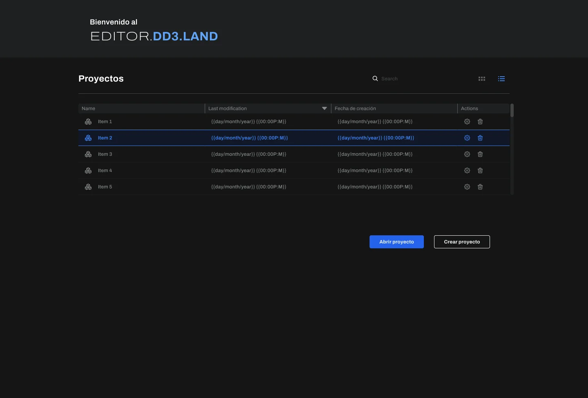
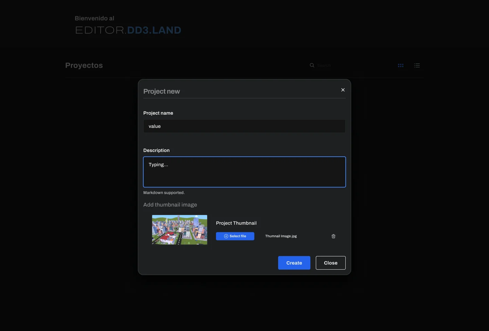
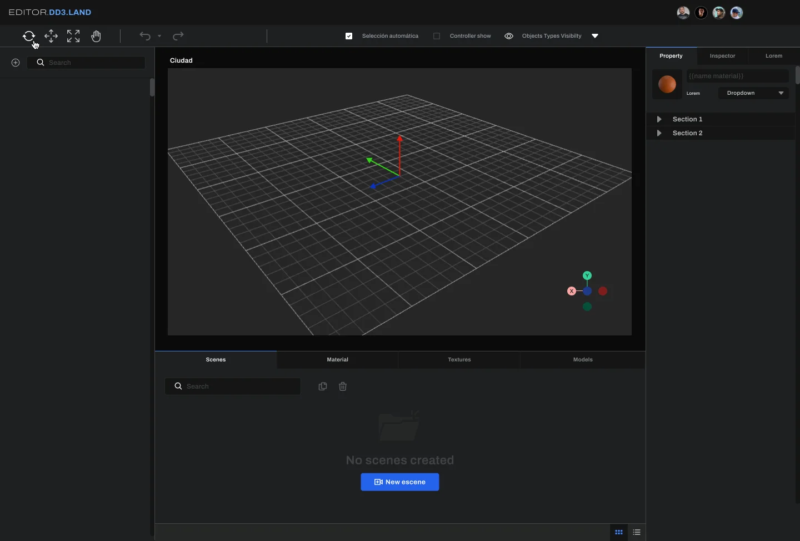
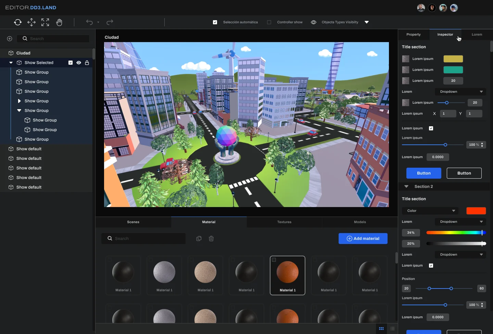
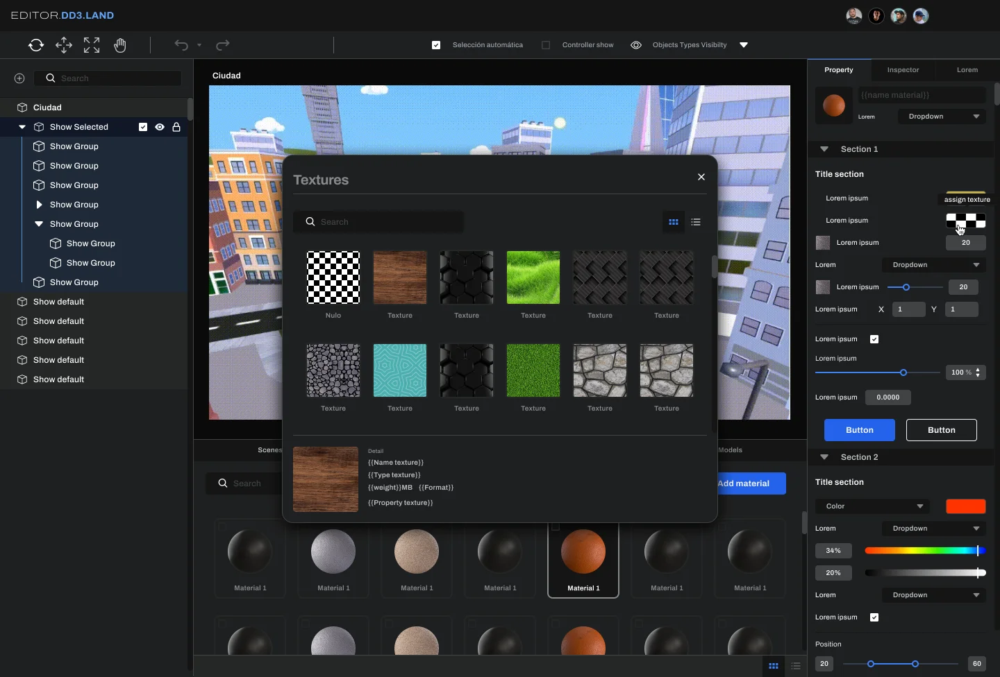

Editor.DD3.Land la herramienta que construye el metaverso
Antes de que el usuario final camine por la ciudad de DD3.Land, el equipo necesita poblarla: edificios, materiales, texturas, escenas. Diseñé el editor 3D interno que le da a ese equipo control total sin código, sin depender de un desarrollador por cada cambio.
Login corporativo, con la misma identidad visual del metaverso

Gestión de proyectos
Cada mundo es un proyecto: grid o lista, según cómo trabaje el equipo
La pantalla de Proyectos permite alternar entre vista de tarjetas (para reconocer visualmente cada mundo) y vista de tabla (para gestionar muchos a la vez), además de crear uno nuevo con nombre, descripción y thumbnail.



El editor 3D
Escenas, materiales y texturas: el pipeline completo sin escribir código
El flujo del editor sigue un pipeline claro: crear o editar el mundo, configurar materiales y texturas, ajustar las escenas y publicar el cambio directo al metaverso.
01Crear / editar mundo
02Configurar materiales y texturas
03Ajustar escenas
04Publicar → Deploy al metaverso


Detalle de personalidad: el mismo robot-mascota de DD3.Land aparece en los estados de error del editor, con mensajes claros y sin fricción — coherencia de marca incluso en las pantallas técnicas.